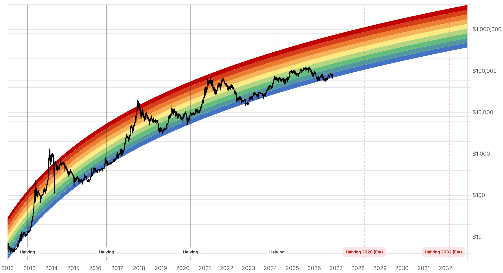

Reporte financiero
BTC cotiza en vivo a USD 73.675,33 (07:21 UTC, -0,05% intradía vs. cierre previo de USD 73.708,88), prácticamente plano hoy pero tras una caída marcada ayer: el IPC de octubre de EE.UU., publicado a las 13:30 UTC del 10-nov, salió más caliente de lo esperado (general +0,4% mensual vs. +0,3% esperado; núcleo +0,3% vs. +0,2% esperado -sin comparación interanual por el vacío de datos del cierre de gobierno-), lo que gatilló una segunda ola de ventas: BTC cayó cerca de un 2% tras el dato (de ~75.223 el domingo a ~73.600-73.900) y liquidaciones adicionales de posiciones apalancadas por USD 632-724M en las horas siguientes (Cryptotimes/Crypto Briefing), sumándose a los más de USD 1.000M ya liquidados el fin de semana. El mercado de tasas reaccionó de forma hawkish: CME FedWatch pasó a tratar una subida de 25pb de la Fed en diciembre como prácticamente segura, y la probabilidad de un movimiento mayor (50pb) subió a ~15% según analistas de Reuters -el gobernador de la Fed Christopher Waller declaró que 'a 50 basis point hike in the policy rate should be considered at the December meeting' y que apoyaría igualmente un alza de 25pb aunque la inflación mejore-. Esto aclara y corrige la cifra de '76,8-78%' citada en reportes anteriores: es la probabilidad de una subida de tasas en diciembre, no de un recorte (la Fed viene de pausar en octubre en 3,75-4,00% tras subir en septiembre). Los flujos de ETFs de bitcoin confirman el deterioro: el 9 de noviembre salieron USD 201,1M netos (IBIT -213,2M, ARKB -9,9M, parcialmente compensados por MSBT +22,1M), cerrando una semana con -USD 1.280M en salidas -la peor semana desde fines de junio-, sexta sesión consecutiva de salidas y ~USD 1.440M retirados desde el 30 de octubre. El evento binario que estaba a '1 día' en el reporte de ayer ya es hoy: MSCI debía publicar su lista final de empresas potencialmente excluidas de sus índices (incluye a Strategy/MSTR) el 11 de noviembre -al momento de este reporte (07:21 UTC) esa lista todavía no se había publicado ni encontrado en fuentes verificadas-; los cambios, de confirmarse, entrarían en vigor al cierre del 30 de noviembre. Michael Saylor ya había restado importancia al riesgo antes de esta fecha ('Not that important to us... They're imposing prejudicial values on digital assets'). El Fear & Greed Index volvió a caer, de 32 ayer a 29 hoy, revirtiendo el repunte modesto del domingo. Sin novedades verificadas desde ayer en: el escándalo de Nvidia/Jensen Huang (el Congreso pidió una fecha de briefing antes de hoy, sin confirmación de si se realizará; próximo evento público es el earnings call del 17-nov), las negociaciones con Irán, la Clarity Act, BTCPay Server, la apelación del Reino Unido sobre los 61.000 BTC y Cantor Fitzgerald.
El IPC de octubre de EE.UU., publicado el 10 de noviembre a las 13:30 UTC, mostró +0,4% mensual en el índice general (vs. +0,3% esperado) y +0,3% en el núcleo (vs. +0,2% esperado) -sin cifra interanual publicada por el vacío de datos del cierre de gobierno de octubre-. La reacción fue inmediata: BTC cayó cerca de un 2% en la hora siguiente al dato (un reporte cita USD 73.612 a las 14:27 GMT), rompiendo brevemente el mínimo del lunes (USD 73.636) antes de estabilizarse cerca del soporte del mínimo del domingo (USD 73.477) y de la media móvil de 200 días (~USD 73.170). Crypto Briefing registró ~USD 178M en liquidaciones de posiciones largas en la primera hora; recuentos más amplios de las horas siguientes (Cryptotimes) hablan de USD 632-724M adicionales -una segunda ola, distinta de los más de USD 1.000M ya liquidados el fin de semana y reportados ayer-. Ethereum también cayó (~USD 2.070, -2,9% diario) de forma proporcional similar a la de BTC en este episodio.
Tras el IPC caliente, CME FedWatch pasó a describir una subida de 25 puntos básicos en la reunión de diciembre como prácticamente segura, y analistas de Reuters elevaron la probabilidad de un movimiento mayor (50pb) a ~15% (desde ~25pb como escenario favorito). El gobernador de la Fed Christopher Waller declaró textualmente: 'I believe a 50 basis point hike in the policy rate should be considered at the December meeting', y agregó que respaldaría un alza de 25pb en diciembre incluso si la inflación mejora, dejando abierta la puerta a un movimiento mayor si otra lectura del núcleo del IPC vuelve a dar 0,3%. Esto aclara la cifra de '76,8-78%' citada en reportes de días anteriores sin especificar dirección: corresponde a la probabilidad de una subida de tasas en diciembre (no de un recorte) -la Fed viene de pausar en octubre en el rango 3,75%-4,00% tras una subida en septiembre, con sesgo hacia un ajuste adicional al alza, no a la baja como podría sugerir el término genérico 'movimiento de tasas' usado antes.
El 9 de noviembre (último dato disponible de tftc.io) los ETFs de bitcoin al contado registraron -USD 201,1M netos: IBIT lideró con -USD 213,2M, ARKB con -USD 9,9M, parcialmente compensados por +USD 22,1M de entradas en MSBT. En la semana completa que cerró el 9 de noviembre las salidas netas totalizaron -USD 1.280M -la peor semana desde fines de junio-, con IBIT solo aportando -USD 1.210M, marcando la sexta sesión consecutiva de salidas y ~USD 1.440M retirados desde el 30 de octubre. El acumulado del año (YTD) se sitúa en torno a -USD 919M según SoSoValue. Esto actualiza y empeora el dato de ayer, que solo llegaba hasta el 6 de noviembre (-USD 411,9M ese día).
El evento que el reporte de ayer señalaba 'a 1 día' se cumple hoy: MSCI debía dar a conocer el 11 de noviembre de 2026 la lista final de compañías potencialmente afectadas por su nuevo filtro de elegibilidad para empresas 'no operativas' (adoptado el 15 de octubre), que podría excluir a Strategy (MSTR) y Metaplanet de sus índices globales. Los cambios, de confirmarse, entrarían en vigor al cierre del 30 de noviembre. Al momento de este reporte (07:21 UTC del 11-nov) no se encontró en fuentes verificadas la lista final ya publicada -queda pendiente y no se debe asumir un resultado-. Antes de esta fecha, el fundador de Strategy, Michael Saylor, ya había restado importancia al riesgo: 'Not that important to us... They're imposing prejudicial values on digital assets.' JPMorgan estima hasta USD 2.800M en salidas pasivas de MSTR si solo MSCI excluye a la empresa (hasta USD 11.600M si otros proveedores de índices siguen el mismo camino); fondos ligados a MSCI tienen ~13M de acciones de Strategy (~3,1% de las acciones básicas en circulación).
Sobre el escándalo de Nvidia, lo único nuevo es que legisladores del Congreso de EE.UU. pidieron a Jensen Huang aceptar una fecha de briefing (o proponer una alternativa) antes de hoy, 11 de noviembre -no se pudo confirmar si el briefing se realizó-; el próximo evento público conocido sigue siendo el earnings call del 17 de noviembre, y no hay resultados de la investigación independiente del directorio. No se encontró cobertura verificada fechada en las últimas 24-48 horas sobre el estado de las negociaciones con Irán, por lo que se deja constancia de que no hay actualización en vez de asumir continuidad o cambio. Tampoco hay desarrollos nuevos verificados en la Clarity Act, la vulnerabilidad de BTCPay Server, la apelación del Reino Unido sobre los 61.000 BTC, ni Cantor Fitzgerald.
| Periodo | Valor |
|---|---|
| 5 nov | 75942.13 |
| 6 nov | 75746.93 |
| 7 nov | 75747.58 |
| 8 nov | 74584.65 |
| 9 nov | 75223.15 |
| 10 nov | 73720.12 |
| 11 nov (en vivo) | 73675.33 |
| Periodo | Valor |
|---|---|
| Hoy | 29 |

“I believe a 50 basis point hike in the policy rate should be considered at the December meeting.”
“Not that important to us... They're imposing prejudicial values on digital assets.”
El evento binario inmediato es la lista final de MSCI sobre exclusión de índices (debía publicarse hoy, 11-nov, aún no verificada al cierre de este reporte) -de confirmarse la exclusión de Strategy, JPMorgan estima hasta USD 2.800M en salidas pasivas de MSTR (hasta USD 11.600M si otros proveedores de índices siguen el mismo camino), con potencial impacto indirecto en el sentimiento cripto más amplio-. En el plano técnico, el soporte más cercano sigue siendo la media móvil de 200 días (~USD 73.150-73.170) y el mínimo del domingo (~USD 73.477); al alza, el nivel a reconquistar sigue siendo el costo base de los tenedores de corto plazo (~USD 75.700, Glassnode, sin cambios desde hace dos reportes).
El giro hawkish de la Fed tras el IPC caliente -con CME FedWatch tratando una subida de 25pb en diciembre como casi segura y ~15% de probabilidad de un movimiento de 50pb según Reuters- es el principal viento en contra nuevo: tasas más altas presionan a los activos sin rendimiento como bitcoin. Se suma el deterioro de los flujos de ETFs (peor semana desde fines de junio, sexta sesión consecutiva de salidas) como señal de demanda institucional debilitada. El escándalo de Nvidia y las tensiones con Irán, sin desarrollos nuevos hoy, siguen como telón de fondo de sentimiento de riesgo general más que como catalizadores directos.
Sin cambios en los objetivos de precio de largo plazo ya reportados en ediciones anteriores (Citigroup, Bernstein, Standard Chartered, Tom Lee, NYDIG, Armstrong, piso de costo de producción de JPMorgan en USD 94.000 -muy por encima del precio spot actual-). BTC sigue muy por debajo de su máximo de 52 semanas de USD 107.428. El giro hawkish de la Fed, el deterioro de los flujos de ETFs y el riesgo binario de MSCI sobre las tesorerías corporativas de bitcoin (Strategy, Metaplanet y otras en lista de observación como SharpLink) se suman como capas de incertidumbre estructural nuevas desde hace una semana.
Es el evento binario más próximo con potencial de afectar directamente a Strategy y, por contagio de sentimiento, a otras tesorerías corporativas de bitcoin en lista de observación (Metaplanet, SharpLink, Ton Strategy Company, Solana Company, DeFi Development Corp.). No asumir un resultado antes de que se confirme con una fuente verificada.
Con una subida de 25pb en diciembre ya tratada como casi segura por CME FedWatch y voces como la del gobernador Waller abriendo la puerta a 50pb, el costo de oportunidad de mantener bitcoin frente a activos con rendimiento sube de forma sostenida, no solo como reacción puntual al IPC de ayer.
La aceleración de salidas (sexta sesión consecutiva, peor semana desde fines de junio) es una señal más confiable de debilidad de demanda que el ruido de precio intradía -si la racha de salidas se revierte, sería una señal temprana de estabilización antes de que se refleje en el precio spot.